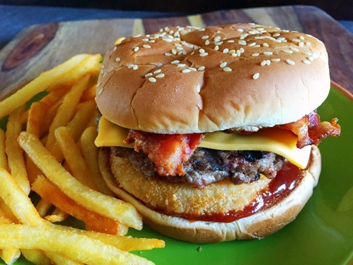

Western Bacon Cheeseburger Recipe

Top Secret Carl's Jr Western Bacon Cheeseburger
In 1989, Carl's Jr became the first fast food chain to allow customers to use their ATM cards to make purchases. Not only can customers buy a Western Bacon Cheeseburger and fries to go without using cash, they can get cas back out of their account.
Onion rings, bacon, American cheese and tasty barbecue sauce combine to make a manly gut-grinder that can be thoroughly enjoyed during the grilling season, or any time of the year fi you use an indoor grill. The sandwich was introduced in 1983, and has since become so successful that it has spawned variations, from junior version to the monstrous double, boh of which are included here. While any barbecue sauce you use for this recipe will work just fine, track down some Bulls-Eye Hickory Smoke flavor barbecue sauce if you want the closest clone results. This recipe makes one sandwich-double, triple, and quadruple it as needed based on current hunger requirements.
Ingredients
- 2 frozen onion rings
- 1/4 pound ground beef
- 1 sesame seed hamburger bun
- 2 slices of bacon
- salt to taste
- 1 slice American cheese
- 2 tablespoons Bull's-Eye Hickory Smokey Barbecue Sauce
Directions
- Preheat a clean barbecue to medium grilling heat.
- Bake the onion rings in the oven according to the directions on the packaging.
- Form the ground beef into a flat burger the same diameter as teh bun. It's best to pre-form your patty and store it in the freezer, then cook it frozen.
- Grill the faces of the top and bottom bun in a frying pan on the stove over medium heat. Keep the pan hot.
- Cook the bacon slices in the pan
- Grill the burger for 3 to 4 minutes per side, or until done. Lightly salt each side.
- Spread 1 tablespoon of the barbecue sauce on the faces of each bun, top and bottom.
- Place both onion rings on the sauce on the bottom bun. Next stack the burger, then cheese and 2 bacon slices, crossed over each other.
- Top off sandwich with top bun.
Makes 1 sandwich